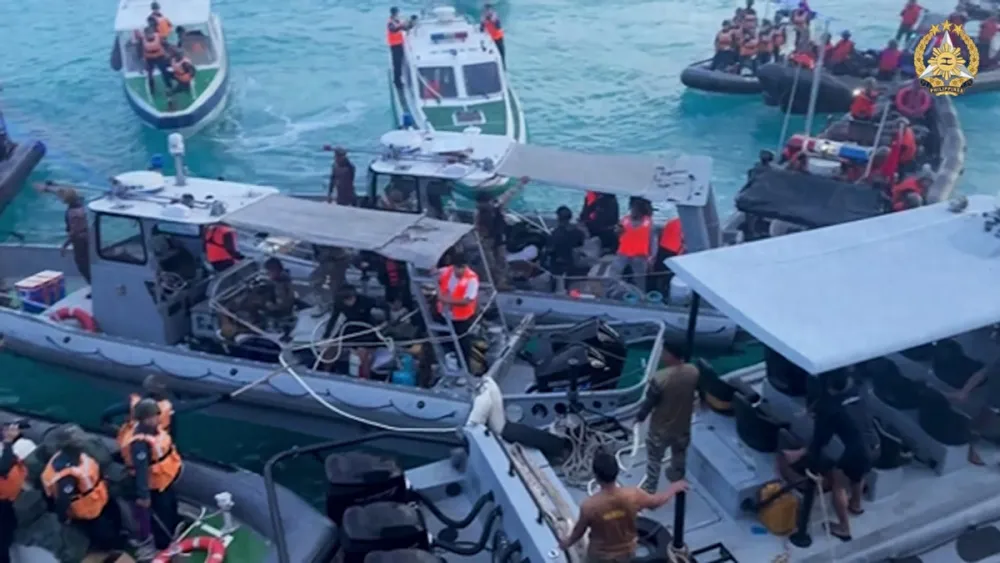

9月大事集：
8月30-9月1日
美军印太总部司令塞缪尔•帕帕罗访问印尼，观摩了“超级神鹰之盾”演习，以重申美印尼全面战略伙伴关系的重要性。帕帕罗强调，美国将继续支持印尼国防和军队现代化建设，深化海上安全和军事演习等方面的合作。

9月1日
菲参议院临时议长伊戈伊•埃斯特拉达就中国海警在仙宾礁“蓄意”撞击菲海警船发表声明称，菲方有“充分的理由和证据”将中国海警“一再无端采取的危险行动”告上国际法庭，“谴责”中方“侵犯国际海洋法和菲律宾主权权利”。
欧盟对外行动署发言人发表声明，“谴责”中国海警船在南海海域对菲律宾船只采取“危险行动”，称此举“危及”海上人员生命安全，“侵犯”各国依据国际法享有的航行自由。声明中还表示，欧盟坚持《联合国海洋法公约》等国际规范和2016年南海仲裁案裁决，并支持伙伴国家行使合法权利。
中国与新加坡在湛江举行“中新合作-2024”海上联合演习。双方开展了军营运动会等交流活动，共同完成了联合对海打击、联合搜救等多个课目实兵演练。演习持续至9日结束。
9月2日
针对中菲船只在仙宾礁碰撞一事，美国海岸警卫队太平洋地区副司令安德鲁•M•杉本表示，美国将为菲律宾提供一切援助，并通过多种方式与菲律宾海岸警卫队合作以支持菲律宾“追究”中国的责任。
来自亚洲、欧洲、北美洲和大洋洲的多位驻菲大使对8月31日中国海岸警卫队船只“反复撞击”菲律宾海岸警卫队船只的行为表示“谴责”。
澳大利亚广播公司（ABC）《四角方圆》节目推出专题纪录片《动荡之海》，介绍了过去两年南海地区冲突频发的背后原因，并分析了美国、日本和澳大利亚等地区强国如何卷入南海争端。
菲律宾海军发言人罗伊•文森特•特立尼达接受采访时称，“捍卫菲律宾南海权益，不能只靠海军及海警队，也需要全民参与，包括渔民在内”，并表示“菲方不会撤离仙宾礁，海军及空军未来也将增加巡逻的频率”

9月2-5日
波兰外交部长拉多斯瓦夫•西科尔斯基访问新加坡、马来西亚和菲律宾期间多次提到南海问题，称南海地区的争端不应以暴力、经济或武力胁迫的手段来解决，无论大小国家都需要尊重南海仲裁案裁决和国际法。
9月3日
台湾当局表示愿意与菲律宾合作，“谴责”中国大陆以维权为“借口”，“采取非法、威胁、胁迫等非和平手段干扰他国船只航行，加剧地区紧张局势”，呼吁各方遵守航行自由的国际共识，并表示“愿意与任何拥有共同价值观的国家在共同关心的领域开展合作”。
2 确认需要从设计中获取的素材
菲律宾武装部队称，仅在过去一周内，其在“西菲律宾海”（菲律宾对南海部分海域的称呼）的“菲专属经济区”内监测到超过200艘中国船只。
菲律宾武装部队称，仅在过去一周内，其在“西菲律宾海”（菲律宾对南海部分海域的称呼）的“菲专属经济区”内监测到超过200艘中国船只。
9月4日
菲律宾《每日问询者报》公布了一份中国就马来西亚在南海争议海域开展油气勘探提出外交抗议的照会文件，马来西亚外交部发表声明称，对文件泄露事件表示“强烈不满和关切”，还表态将追究相关人员责任。
菲律宾参议院和众议院联席委员会批准了《群岛海道法案》合并版本。该法案将为在菲律宾群岛水域内行驶的外国船只和飞机指定航道。菲律宾参议院多数党领袖弗朗西斯·托伦蒂诺表示，该法案一旦颁布，将提交给国际海事组织（IMO）。目前，该法案已得到菲参议院批准，只需众议院批准即可提交总统签署。
日媒引知情人士称，美军将在日本、韩国、澳大利亚、新加坡和菲律宾建立维修中心，打造维修网络。据称，美军“地区保障框架”（RSF）设想利用其盟国及伙伴国现有工业能力，使之在其行动区域附近对美国的军舰、战机和车辆进行保养和维修，而无须将其带回美国本土。该计划将于今年在日本、韩国、澳大利亚、新加坡和菲律宾启动试点，未来两年扩展到美军欧洲司令部覆盖的北约伙伴国及南方司令部覆盖的拉丁美洲伙伴国。
9月5日
马来西亚总理安瓦尔•易卜拉欣表示，尽管中国发出两份抗议照会以要求马来西亚停止在南海的勘探活动，但马方将继续进行油气勘探，并称此举无意挑衅中国或对中国持有敌意，相信中马能像朋友那样通过协商解决争端。
日本外务大臣上川阳子、防卫大臣木原稔和澳大利亚外长黄英贤、防长马尔斯在澳大利亚墨尔本附近举行防长与外长“2+2”会谈。会谈期间，双方就“中国日益频繁的军事活动”交换了意见，表示强烈反对“单方面以武力改变东海和南海现状的企图”，并一致同意加强防务合作，支持菲律宾海警的工作，同时强化与美国的三边合作。
美国国防技术安全管理局和美军印太司令部代表团对菲律宾武装部队进行最后一次安全援助访问。菲武装部队公共事务办公室主任薛西斯·特立尼达称，该调查是“敲定马尼拉和华盛顿特区之间的军事信息一般安全协议”的关键一步。

9月5-11日
越南海警第三区在南海中部海域（越南平顺省附近海域）举行实弹演习，演习场景包括主权和安全威胁，外国船只非法进入越南水域，应对灾难及执行救援等。现场照片和视频片段显示，越海警配备了火炮、防空炮和火箭发射器，并向空中目标开火，还使用水炮驱离外国船只。越海警第三区总部位于巴地头顿省，辖区包括南沙群岛。
9月6日
完成“和平团结-2024”联合演习的中国海军舰艇编队技术停靠越南金兰港，进行为期3天的补给休整。越南海军“光忠”号（舷号016）导弹护卫舰位金兰以东30海里处迎接，为编队引导入港。
9月6-10日
印度尼西亚海军“毕玛苏吉”号（舷号945）风帆训练舰，对上海进行了为期5天的友好访问。这是“毕玛苏吉”号风帆训练舰第2次访问上海，也是印尼海军舰艇第3次访问上海。中国海军首艘风帆训练舰“破浪”号（舷号86）将搭载90余名海军学员和官兵，结合远海实习访问印度尼西亚。
9月7日
德媒《明镜周刊》透露，正在亚太地区航行的德国海军“巴登-符腾堡”号护卫舰（F-222）和“美因河畔法兰克福”号补给舰（A-1412），计划于9月中旬从韩国前往印尼的途中穿越台湾海峡，以宣示“自由航行”权利。
9月8-11日
美国、澳大利亚和意大利在南海展开了为期四天的联合军事演习。参加兵力包括美国海军阿利·伯克级“罗素”号导弹驱逐舰（DDG-59），澳大利亚空军P-8A反潜巡逻机，意大利海军“加富尔”号航母（CVH-550）、卡洛·贝尔加米尼级护卫舰（F593）和多用途战斗舰拉依蒙多·蒙特库科利号巡逻舰（P432）。演习科目包括防空、反潜和对舰等。
9月9日
澳大利亚主导的“卡卡杜2024”演习在澳大利亚北领地达尔文展开，来自美国、印度、越南、日本、加拿大、菲律宾等三十多个国家的高级代表团、参谋军官、军舰和飞机参加。参演兵力包括11艘水面舰艇、1艘潜艇、4架F-35战斗机、5架侦察机和海上巡逻机以及7架直升机。演习科目覆盖从警戒行动到高端反潜和防空作战的全方位海上作战。期间，美军P-8A与印度海军P-8I、澳大利亚海军P-8A、日本海上自卫队P-1举行反潜联合演练。
9月10日
由越南和俄罗斯组建的合资公司越俄石油公司（Vietsovpetro）在距离头顿市东南部145公里的白虎油田09.1区块成功安装BK-23钻井平台上部组块。
中国人民解放军南部战区司令员吴亚男与美军印太总部司令塞缪尔•帕帕罗举行首次视频通话，双方就共同关心的问题深入交换意见。帕帕罗列举了中方近期与美国发生的几次“不安全互动”，称中方有义务遵守国际法和相关规范，并敦促中方重新审视在南海及其他地区采用“危险、胁迫及可能升级的策略”。
英国外交大臣戴维•拉米和美国国务卿安东尼•布林肯在伦敦举行了首届“英美战略对话”，会后（14日）发表的联合声明中涉及台湾、南海问题。布林肯表示，英美双方讨论了如何确保“台海稳定”以及在南海的所谓“飞行和航行自由”。
菲律宾武装部队和印度武装部队在菲律宾奎松市的阿奎纳尔多营地举行第五次联合防务合作委员会和第三次军种对军种会议，双方讨论了不断变化的地区安全形势及应对战略，重申加强防务合作的承诺，并强调海上安全和航行自由的重要性。
9月11日
外交部副部长陈晓东同菲律宾外交部副部长拉扎罗在北京共同举行中菲南海问题双边磋商机制（BCM）团长会晤。菲方坚持认为仙宾礁位于“菲律宾专属经济区”内。中方重申了在仙宾礁问题上的原则立场，敦促菲方立即撤离有关船只。双方同意继续通过BCM等外交渠道保持沟通。
9月13日
以“共筑和平、共享未来”为主题的第十一届北京香山论坛在北京开幕，共有100多个国家和国际组织官方代表团的1800多名嘉宾参会。各方围绕“安全合作与亚太繁荣稳定”“全球南方与世界和平发展”等核心话题展开讨论。同时，论坛还将举行八场专题会议，深入探讨中美关系、东盟等议题，充分发挥南南合作和南北对话桥梁的关键作用。
德国军舰以行使“航行自由”权利为由，穿越台湾海峡，并声称台湾海峡是“国际水域”。
9月14日
美国驻菲律宾大使玛丽凯•卡尔森在接受采访时声称，中国在南海的“九段线”是“卡通画”，不符合国际海洋法，美方在维护国际法方面与盟友菲律宾站在一起。
长期非法滞留在中国南沙群岛仙宾礁的菲律宾海警船“特雷莎•马格巴努亚”号（BRP Teresa Magbanua，菲海警9701舰）已经撤离。当天，菲律宾海岸警卫队和国家海事委员会表示，菲方将派遣另一艘船只前往仙宾礁，以取代“完成任务后已经返回港口”的菲海警9701舰。
9月14-15日
第18次中美国防部工作会晤在北京举行，美方称此次会谈凸显“中菲南海对抗情势加剧、中国大陆对台湾武力威胁不减的局势下，美国持续重视两军交流”。
9月15日
美国哥伦比亚广播公司（CBS）的“60分钟”新闻节目播放8月19日中菲海警船在仙宾礁海域对峙现场视频，并“批评”中国在南海的立场和行动。
9月16日
德国“巴登-符腾堡”号护卫舰（F-222）和“美因河畔法兰克福”号补给舰（A-1412）抵达马尼拉港，并对菲律宾开始为期3天的访问，期间双方将举行联合军演。据悉，德国海军两舰是其2024年印太部署（IPD-24）的一部分，此次为德国军舰20年来首次访菲。
9月17日
英国路透社消息称，俄乌冲突促使美军更注重成本效益，美正大量囤积低成本“快速击沉”（QUICKSINK）反舰武器，以加强“印太地区”美军力量，威慑中国。未来五年，美军将加大印太地区战略部署，并将采购超过800枚SM-6导弹，且库存中已有大量战斧导弹和JDAM尾翼套件。
美国空军于9月5日至6日召集了30多支MQ-9“死神”无人机中队，在佛罗里达州参加本年度的“死神烟雾”演习，旨在考验各MQ-9中队在“中国南海上空执行模拟任务”的能力。此次演习以美济礁为模拟作战场景，主要测试潜在现实冲突场景中的决策和作战准备情况，旨在提高无人机飞行员和传感器操作员在争议地区执行精确打击和侦察任务的技能。
美国海军第七舰队的一架P-8A反潜巡逻机穿越台湾海峡，并公开炒作。中国人民解放军东部战区组织战机对美机过航行动跟监警戒，依法依规处置。
台湾海军陆战队近日重返东沙岛执行长期驻防任务。台媒援引军方人士消息称，随着大陆频繁“侵扰”台湾西南海空域，东沙岛的战略地位愈加突出，因此在岛上增设多项防卫武器系统及相关侦搜设施，过去“短期派驻”的海军陆战队也改为“长期驻防”。
据美国海军学会新闻网（USNI News）称，美国海军海上系统司令部与菲律宾武装部队签订了一项新合同，为菲律宾在苏比克海军基地建造新码头提供资金。美国军舰在南海行动时会定期停靠苏比克湾，而苏比克湾距离南沙群岛仅300海里。
9月17-18日
澳大利亚和菲律宾在澳大利亚堪培拉举行第四次海事对话。双方重申遵守《联合国海洋法公约》和2016年南海仲裁案裁决，并共同致力于维护“以规则为基础的国际秩序”。
9月18日
为庆祝菲律宾海洋和群岛民族意识月，菲律宾驻奥地利维也纳大使馆就2016年南海仲裁案裁决和南海问题最新进展举行讲座，强调《联合国海洋法公约》和2016年仲裁案裁决是菲律宾南海政策的“双重支柱”，呼吁海外菲律宾人了解菲律宾对南海的立场，并随时关注南海问题最新动向。
澳大利亚总理安东尼•阿尔巴尼斯、英国首相斯塔默与美国总统拜登发表联合声明，以纪念“三方安全伙伴关系”（AUKUS）协议三周年，并表示韩国、新西兰、加拿大均与AUKUS成员国保持着密切的双边防务伙伴关系，因此将与三国就开展先进技术合作的可能性进行协商。
菲律宾外交部正在审查一项提案，该提案旨在向联合国大会提交一份关于中国在南海日益加剧的“侵略行为”的决议。
9月18-20日
中国人民解放军南部战区司令员吴亚男率团赴美国夏威夷参加印太国防军司令会议。期间，与泰国、新加坡、菲律宾、美国等国参会代表进行双边会见或互动交流。吴亚男与美军印太总部司令塞缪尔•帕帕罗会见时，围绕落实两国元首共识，就共同关心的问题坦诚深入地交换了意见。
9月19日
路透社披露，“堤丰”导弹系统（Typhon Weapon System）可能会继续在菲律宾部署，且美方正在检验将该导弹系统用于区域性冲突的可能性。菲方官员表示，菲美两军仍在进行“堤丰”导弹系统的相关培训。美国太平洋陆军称，菲方同意将该导弹系统保留至2024年9月以后。
美国国会两位参议员提出一项法案，要求制裁支持中国海上民兵的国家，赋予政府对海上民兵的外部支持者处以经济处罚的权力。
菲律宾众议院三读全票通过第10841号法案，该法案旨在加强菲律宾海岸警卫队在确保海上安全和海洋环境保护方面的能力。法案明确菲律宾海岸警卫队“应继续隶属于交通部，但在战争时期将隶属于国防部”，并规定菲律宾海岸警卫队人员获得与菲律宾武装部队同等基本工资、危险津贴以及其他福利和津贴。
9月19-22日
马来西亚最高元首安瓦尔•易卜拉欣对中国进行国事访问，并主动承诺：“愿同中方一起在维护南海和平稳定方面做出建设性贡献”，并强调对南海问题的重视。
9月20日
菲律宾国家安全顾问爱德华多•阿诺宣布，菲律宾海岸警卫队已派遣一艘新的船只前往仙宾礁，以替代菲海警船“特雷莎•马格巴努亚”号（BRP Teresa Magbanua，菲海警9701号）。
9月21日
日本首相岸田文雄在美国东部特拉华州威尔明顿的总统拜登私宅举行了日美首脑会谈。双方一致认为，日美同盟需持续提升处置能力和威慑力以维护东亚地区安全，确认了“反对中国在东海和南海凭借力量单方面改变现状的尝试”并坚决应对的方针。
菲律宾渔业与水产资源局的一架小型巡逻机在没有任何通报的情况下试图强闯中沙群岛黄岩岛附近海域上空以进行所谓“巡逻”，中国海军合肥舰（舷号174）及时发现并迅速派遣直9舰载直升机前往拦截。菲方称，两机相距最近6米，中方“违反了飞行安全”。
菲律宾国家海事委员会（NMC）表示，菲海岸警卫队（PCG）已部署新舰取代9月14日撤离的9701舰，该船正在靠近仙宾礁。
9月21-22日
美日印澳在美国特拉华州威尔明顿市举行“四方安全对话”（QUAD）领导人峰会，美国总统拜登称中国“继续以侵略性行为行事，在整个地区测试我们，这在南海、东海、南亚和台湾海峡中都是真实存在的”，也在“寻求为利益争取外交空间”。会议联合声明表示南海海域存在“胁迫和霸凌”，并宣布明年将举行四方海岸警卫队联合巡航行动，计划扩大“印太海域意识伙伴关系”。
9月22日
菲律宾海岸警卫队司令罗尼·吉尔·加文海军上将表示，已向仙宾礁部署新的海警船，沿途没有遇到中国船只。菲海岸警卫队发言人阿曼德·巴利洛少将称，该船已经开始在仙宾礁周围海域巡逻。
在仙宾礁与中国海警船相撞的菲律宾海岸警卫队“特雷莎•马格巴努亚”号（BRP Teresa Magbanua，菲海警9701舰）预计需要维修两到三个月。目前，该舰停靠在宿务岛达瑙市。
9月23-27日
第24届北太平洋地区海岸警备执法机构论坛高官会由日本海上保安厅轮值主办，加拿大海岸警备署、日本海上保安厅、韩国海洋警察厅、美国海岸警卫队和中国海警局等论坛成员机构派出高级别代表团参会。各方一致同意，将继续推动开展论坛框架下双多边海上执法合作、能力建设及信息共享，提升应对海上突发事件能力，共同维护地区海上安全稳定秩序。
9月24日
菲律宾海军发言人特立尼达称，于17日至23日在南海（菲律宾主张海域）发现251艘中国船只，包括28艘中国海警船、16艘中国海军军舰、204艘中国海上民兵船和3艘中国科考船，多于10日至16日发现的157艘，创下今年最高纪录。
9月25日
两名菲律宾官员表示，美国和菲律宾的安全官员已同意将一套美国“堤丰”中程导弹系统（Typhon Weapon System）无限期部署在菲律宾北部。
日本“涟”号驱逐舰（DD-113）、澳大利亚“悉尼”号驱逐舰（DDG-42）、新西兰“奥特亚罗瓦”号补给舰（A11）集体穿越台湾海峡，驶往南海区域进行演练。日媒称，这是日本海上自卫队的驱逐舰首次通过台湾海峡。外交部发言人林剑表示，对于外国军舰过航台湾海峡，中方一贯依法依规予以处置，同时对任何可能危害中方主权和安全的行径保持高度的警惕。
中国向太平洋相关公海海域发射一发携载训练模拟弹头的洲际弹道导弹，准确落入预定海域。中方提前向有关国家做了通报，但日本称未收到事先通报，日本内阁官房长官林芳正重申了对中国军事扩张的“严重关切”，并表示日本将“竭尽全力巡逻和监控”局势。新西兰外交部长温斯顿•彼得斯表示，此次导弹发射是“不受欢迎且令人担忧的事态发展”。法属波利尼西亚主席莫埃泰•博尔森也对此表达了惊讶和担忧。26日，斐济总统拉图·威廉姆·卡托尼韦雷在纽约联合国大会演讲时呼吁：“尊重我们的地区”并停止在太平洋进行导弹试验。
9月26日
菲律宾国家安全顾问爱德华多•阿诺表示，“一艘菲方海岸警卫队船只正在仙宾礁附近巡逻，并确保仙宾礁不会发生填海造地和其他非法活动”，但无法透露这艘菲律宾船只具体在南海的位置。
按照中菲双方达成的临时性安排，菲方在获得中方同意并接受现场检查后，派一艘民船对其非法“坐滩”仁爱礁军舰运送生活物资，中国海警对菲船只询问确认并全程监管。
9月27日
华阳海洋研究中心联合中国南海研究院、越南外交学院在海口举办“中越北部湾划界的经验与启示”研讨会。来自华阳海洋研究中心、中国南海研究院、郑州大学、武汉大学、华侨大学，越南外交学院、越南外交部、越南国家边界委员会的近20名专家学者围绕“中越北部湾划界经验与启示”“新形势下的中越关系展望”“中越视角下的南海形势”等议题进行深入探讨与交流。
菲律宾武装部队（AFP）声明称，已雇用一艘民船对“坐滩”在仁爱礁的“马德雷山”号军舰（LT-57）实施后勤补给并得到菲海岸警卫队支持，此次不仅完成后勤补给，还轮换驻守人员。
“南海战略态势感知计划”智库平台在北京发布《南海航行及飞越状况报告》。该报告指出，美国等域外国家经常将一些针对南海沿岸国的挑衅性军事活动包装成“航行自由”问题。美军每年有约100架次逼近中国大陆及海南岛领空，多数距离领海基线已不足30海里。
9月28日
菲律宾武装部队发表声明称，美国、日本、澳大利亚、新西兰和菲律宾在所谓的“菲律宾专属经济区”进行多边海上合作活动，包括航行前简报、通讯练习、跨甲板练习、分队战术/值班军官演习、摄影练习、海上补给方法、海域意识练习和联系报告，地点就位于中国黄岩岛附近海空域。
中国人民解放军南部战区组织海空兵力在中国黄岩岛附近海空域进行侦察预警、海空巡逻等例行性演训活动。
9月29日
日本首相石破茂近日在美国智库哈德逊研究所网站发表文章，阐述了其构建所谓“亚洲版北约”的政策主张，他声称：“建立亚洲版北约对于西方盟友遏制中国至关重要。”石破茂还鼓吹引入美国核武器，声称“亚洲版北约”应该考虑向日本等国家部署美国核武器。
一艘越南渔船在西沙群岛附近水域进行非法捕鱼作业时，疑似遭到外国船只的袭击，造成该船3名船员手臂和腿骨折，另有7名船员受轻伤。越南边防部队正在调查此案。
9月30日
中国海警局执法部副部长刘德军表示，部分外籍渔船在伏休期间进入我国管辖海域实施非法捕捞活动，侵犯我国海洋权益。伏季休渔期间，共驱离外籍侵渔渔船799艘次，登检46艘，扣港调查10艘，发现外籍侵渔渔船数量较去年同期减少18%。
白宫正式发表声明，宣布拜登政府已批准向中国台湾地区提供高达5.67亿美元的“国防支持”，以支持台湾地区的军事教育和训练项目，以及一系列旨在增强台湾所谓“不对称战力”的举措。
9月30-10月1日
根据年度军事训练任务安排，中国人民解放军南部战区组织舰艇编队位南海有关海域进行战备巡航，旨在提高联合作战能力，坚决维护南海地区和平稳定。
10月10日
外交部发言人毛宁主持例行记者会。有记者问，据报道，菲律宾总统马科斯10日在东盟峰会上提及南海问题，强调菲律宾遵守法治和基于规则的国际秩序，呼吁所有东盟成员国不要对外部势力针对东盟成员的侵略性、胁迫性和非法行为视而不见，对这些侵犯行为沉默会削弱东盟。中方对此有何评论？
毛宁表示，当前，在中国和东盟国家共同努力下，南海局势保持总体稳定。中方一贯坚持同有关当事国在尊重历史事实和国际法的基础上，通过对话协商妥处涉海分歧，同时中方坚决反对任何侵权挑衅，坚定维护自身的领土主权和海洋权益。中方将继续同东盟各国一道，全面有效落实《南海各方行为宣言》，积极推动“南海行为准则”磋商，共同将南海打造成和平之海、友谊之海、合作之海。